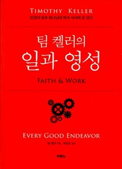

팀 켈러의 『일과 영성』을 함께 펴 든 첫 모임은 소년 보호시설 아이들을 섬겨 온 한 참석자의 나눔으로 문을 열었다. '이때를 위함'이라는 에스더의 말을 붙들고 저마다 혹독했던 첫 직장 이야기가 이어졌고, 논의는 '형통하지 않으면 하나님의 부르심이 아닌가'라는 오래 묵은 질문으로 깊어졌다. 완벽주의와 거짓 죄책감을 분별하는 고백이 오간 뒤, 진행자는 우선순위를 분별하고 한계를 인정하며 사과할 줄 아는 것이 곧 영성이라고 답했다. 봉사와 일의 경계, 돈과 직업의 중립성까지 짚은 두 시간여의 나눔은 과정에 신실하면 결과는 하나님께 달렸다는 다짐으로 마무리됐다.
가장 가난한 마음에 복음이 닿는다 — 보호시설의 아이들
모임은 소년 보호시설의 아이들을 만나 온 한 참석자의 나눔으로 시작됐다. 큰 상처를 안고 들어온 아이들 대부분이 부모에게서 받은 아픔으로 스스로를 낮게 여기고 있었고, 그는 그 아이들을 볼 때마다 자신이 처음 복음을 받았을 때의 감각이 되살아난다고 했다. 떠나보내는 한 아이에게 해 줄 수 있는 말이 '교회에 가라'는 한마디뿐이었는데, 어쩌면 그 한마디를 하기 위해 자신이 이 자리에 온 게 아닌가 싶었다는 고백이었다.
진행자는 한 목사의 교도소 설교 이야기로 화답했다. 죄와 자유를 몸으로 고민해 본 사람만큼 복음을 받아들일 준비가 된 사람은 없다는 역설이었다. 함께 듣던 다른 참석자는 그 아이들을 두고 하나님이 불공평하신 게 아니냐고 따져 물으며 기도마다 울던 시절을 지나, 하나님이 일하시는 방식은 사람의 계산과 다르다는 것을 배웠던 자신의 기도 이야기를 보탰다.
'이때를 위함' — 혹독한 첫 자리가 사람을 빚는다
에스더서의 '이때를 위함'이라는 말을 두고 저마다의 첫 직장 이야기가 이어졌다. 한 참석자는 매일 울면서 출근할 만큼 힘들었던 첫 직장에서 '닦인' 덕분에 지금의 자리에서 누리는 만족과 감사가 가능해졌다고 돌아봤다. 다른 참석자는 첫 부임지가 가장 험하다는 학교였던 시절을 꺼냈다. 욕설이 일상인 교실에서 견디며, 이 아이들도 다 사랑이 결핍된 아이들이라는 걸 머리로는 알아도 받아 줄 마음의 여유가 없었다고 했다.
그러나 1년 내내 마음을 닫았던 한 학생이 졸업하는 날 교무실 책상에 편지와 선물을 두고 갔다는 이야기에 이르자, 견딤이 맺는 열매가 다음 견딤의 동력이 된다는 데에 다들 고개를 끄덕였다. 힘든 자리 자체가 축복은 아니지만, 돌아보면 그 자리가 사람을 빚어 놓았다는 공감대였다.
형통이 부르심의 증거인가 — 질문 자체를 다시 묻다
이날 가장 긴 나눔은 한 참석자의 일과 소명에 대한 고민이었다. 하나님이 보내신 직장이라 믿고 감사함으로 버텼지만 시련이 거듭되고 가는 길마다 자꾸 막히자, '여기가 부르신 곳이 맞나' 하는 의문이 떠나지 않았다는 것이다. 남들은 겪지 않는 막힘을 혼자 겪는 것 같은데, 그 고민을 어디 가서 나누기도 어려웠다고 했다.
다른 참석자가 조심스레 되물었다. 스트레스 없이 평안한 상태를 부르심의 증거로 삼고 있는 것은 아니냐고. 그 물음 앞에서 나눔은 점점 질문의 뿌리로 내려갔다. 책을 읽으며 그는 자신이 일을 바라보는 관점이 하나님의 주권보다 자기 의지와 선택에 기울어 있었음을, 그래서 기도의 질문 자체가 잘못되었을 수 있음을 발견했다고 했다. 어디에 있든 지금 있는 그곳에서 인도하시는 분은 하나님이라는 데까지 이르자, 오래 눌러 온 물음이 조금은 가벼워진 듯했다.

완벽주의와 거짓 죄책감을 분별하다
이야기는 완벽주의라는 공통의 짐으로 옮겨 갔다. 한 참석자는 아이에게 화를 낸 아침마다 하루가 통째로 무너지던 경험을 꺼내며, 그 괴로움의 정체가 회개가 아니라 '하나님 앞에서 완벽한 나'라는 자기 의가 깨진 데 대한 분노였음을 깨달았다고 고백했다. 사역을 내려놓는 것은 불순종이라고 배워 온 시절, 내려놓은 직후의 묵상 본문이 하필 불순종에 관한 말씀이어서 오래 죄책감에 짓눌렸다는 이야기도 나왔다.
참석자들은 감당하지 못할 것을 다 떠안는 것을 하나님이 원하시지 않으며, 하나님과의 친밀함을 끊어 놓는 죄책감은 다른 데서 오는 것이니 분별해야 한다는 데에 뜻을 모았다. 완벽하지 않아도 사랑한다고 말씀하시는 아버지의 음성과, 무너질 때마다 정죄하는 목소리를 구별하는 것 — 그것이 이 대목의 나눔이 도달한 자리였다.
우선순위가 곧 영성 — '못 한다'고 말할 줄 아는 신앙
진행자는 시간과 에너지와 재정의 우선순위를 분별하는 것이 곧 영성이라는 책의 통찰을 자기 이야기로 풀었다. 시간이 아까워 교회 사무실에 침낭을 펴고 자던 젊은 날의 열정과, 둘째가 태어난 사흘 동안 첫째에게 몇 년 치 화를 몰아서 냈던 부끄러운 기억까지. 사람의 감정과 힘에는 한계가 있으니 때로는 못 한다고 말해야 하고, 우선순위에서 놓친 부분에 대해서는 변명 대신 바로 사과해야 한다고 했다. 혼자 다 감당할 수 없기에 하나님이 공동체를 주셨다는 말도 덧붙였다.
순종을 압박의 수단으로 삼아 죄책감을 심는 교회 문화에 대한 문제 제기가 나오자, 진행자는 리더의 분별을 강조하며 한 사람에게 직분이 쌓이지 않도록 겸직을 막는 자신의 원칙을 소개했다. 평화를 만들려면 갈등을 감당해야 하고 그래서 미움받는 것을 두려워하지 않는다는 이야기에서는, 진리보다 평판이 힘이 센 시대에 대한 뼈아픈 진단이 이어졌다.
봉사는 일인가 — 성속의 구분 없이, 과정에 신실하게
마지막 화두는 교회 안의 봉사를 '일'로 보아도 되느냐는 물음이었다. 진행자는 봉사에도 분명 일의 요소가 있다고 인정하면서도, 옛 사역지에서 성도들이 자신들이 누리는 은혜가 목회자의 것보다 크다고 말해 주던 기억을 근거로, 섬김의 시작점은 일의 원리와 다르다고 답했다. 기쁨이 사라져도 처음 정한 기간은 지키되, 한 번 맡았다고 평생 계속해야 할 의무는 없다는 원칙도 나눴다. 수십 년을 다음 세대 곁에서 섬긴 한 어른의 이야기가 그 모범으로 소개됐다.
이야기는 자연스럽게 돈과 직업의 중립성으로 넘어갔다. 자신이 약한 영역이라면 유혹의 현장을 피하는 것이 지혜이고, 반대로 재능을 받은 사람이라면 공동체가 그를 위해 기도하며 그 자리로 보내야 한다는 것. 받은 달란트가 클수록 책임도 크다는 이야기 끝에, 신실한 과정을 살면 결과는 하나님의 몫이라는 확인이 놓였고, 긴 나눔은 한 참석자의 기도로 닫혔다.